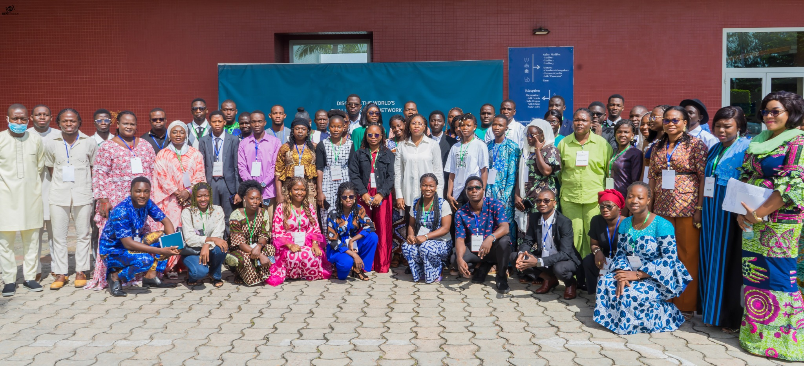
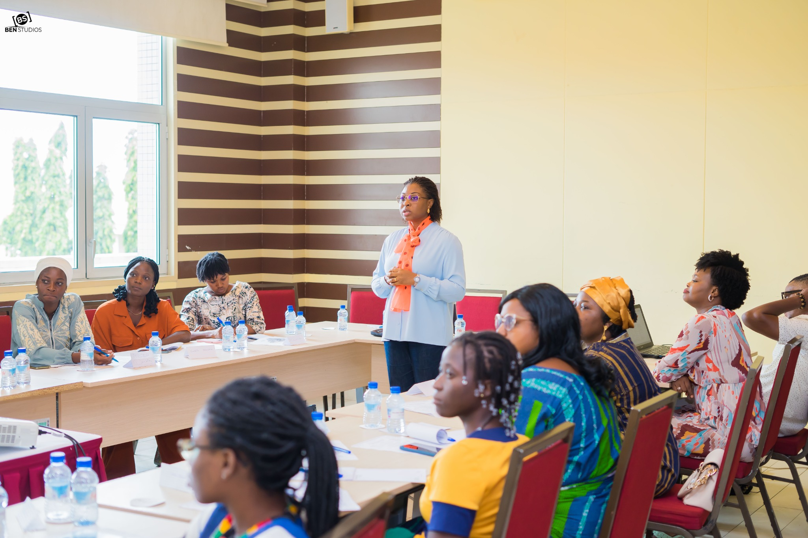
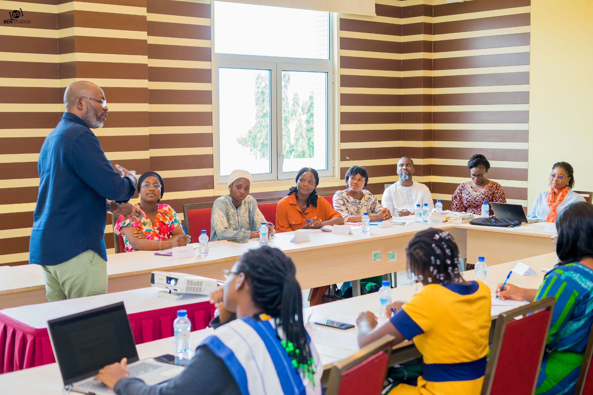
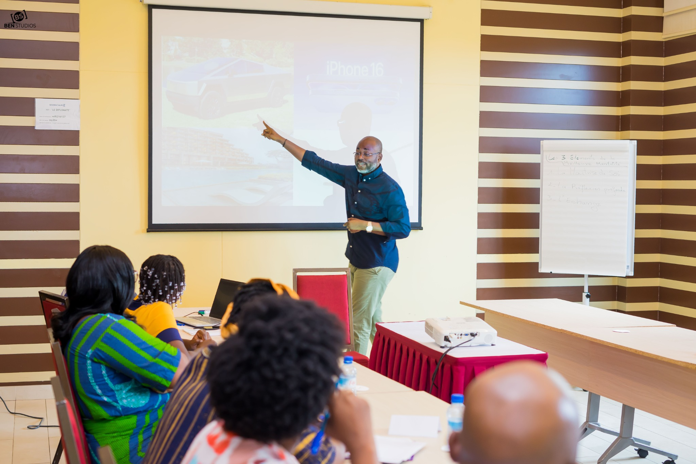
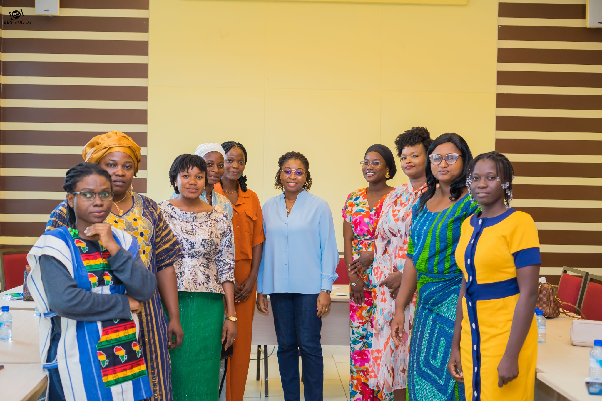

Vision & direction
Faire le point, clarifier tes priorités et donner un cap plus lisible à ton avenir professionnel.
CLARIFIER ta trajectoire • RENDRE ta valeur visible • ACTIVER ton potentiel
Que tu vises une promotion, une reconversion, une insertion professionnelle, le développement d’un projet ou un repositionnement, Conversations Inspirantes t’aide à comprendre ce qui peut débloquer la suite — puis à le mettre en mouvement.

Ta prochaine évolution ne dépend pas seulement de ce que tu sais faire.
Elle dépend aussi de ta capacité à reconnaître ta valeur, la rendre visible, t’entourer et agir.Pourtant, ton évolution professionnelle peut sembler plus lente, moins lisible ou plus difficile à provoquer que tu ne l’imaginais.
Tu veux évoluer dans ton métier, prendre davantage de responsabilités ou préparer une promotion, mais tu ne sais pas toujours ce qu’il faut rendre plus visible ou plus affirmé.
Tu envisages une reconversion et tu as besoin de relier ton expérience, tes talents et tes aspirations pour choisir une direction crédible et stimulante.
Tu prépares ton insertion professionnelle et tu veux mieux parler de toi, de tes compétences, de ton potentiel et de la valeur que tu peux créer.
Tu portes un projet, plusieurs idées ou une ambition plus grande, mais tu as besoin d’un cap, de priorités, de mentorat et d’un réseau qui t’aide à accélérer le passage à l’action.
Tu n’as peut-être pas besoin de “plus de compétences”. Tu as peut-être besoin de mieux mobiliser celles que tu as déjà.

Nous croyons qu’une croissance professionnelle durable se construit à l’intersection de plusieurs dimensions : ce que tu sais faire, la manière dont tu te connais, la façon dont tu racontes ta valeur, les décisions que tu oses prendre et les personnes dont tu choisis de t’entourer.
Tu peux être compétent et rester invisible. Tu peux être expérimenté et hésiter à prendre ta place. Tu peux avoir du potentiel et manquer de direction, de réseau ou de confiance pour le transformer en opportunités.
C’est pourquoi Conversations Inspirantes relie connaissance de soi, posture professionnelle, visibilité, mentorat, expérience collective, réseau et mise en mouvement.
Et c’est aussi ce que nous disent celles et ceux qui ont vécu le programme : les effets se prolongent dans leur manière de se positionner, de décider, de se rendre visibles et d’avancer.
« Ce module m’a permis de mieux définir mon identité professionnelle et de clarifier mes objectifs. »
— Parole de bénéficiaire • attribution finale à valider
Pas une promesse magique. Un déplacement concret dans ta manière de te connaître, te positionner, te rendre visible et agir.
Tu avances, mais sans cap professionnel suffisamment clair.
Prioriser une direction et identifier les prochaines étapes qui comptent vraiment.
Tu sais que tu as de la valeur, mais tu as du mal à la nommer ou à la défendre.
Mettre des mots précis sur tes talents, tes compétences, tes expériences et ta contribution.
Ton parcours est riche, mais ton récit professionnel reste dispersé.
Présenter ton histoire et ton positionnement avec davantage de cohérence et d’impact.
Tu hésites à te rendre visible, à demander de l’aide ou à activer ton réseau.
Développer une visibilité plus alignée et mobiliser des relations utiles à ta progression.
Tu as des idées, mais le passage à l’action reste irrégulier.
Transformer tes prises de conscience en priorités, décisions et actions professionnelles concrètes.
Faire le point, clarifier tes priorités et donner un cap plus lisible à ton avenir professionnel.
Identifier les freins invisibles qui limitent certaines décisions, prises de parole ou ambitions.
Relier ce que tu aimes, ce que tu sais faire, ce que tu peux apporter et la valeur que tu peux créer.
Affiner ton positionnement, ton récit, ta biographie et la manière dont tu veux être reconnu.
Rendre ta valeur plus lisible, construire des relations et créer davantage de passerelles vers les opportunités.
Passer de l’introspection aux décisions, puis des décisions à une feuille de route professionnelle concrète.
« Je repars de ce parcours avec une version de moi-même plus claire sur ce qu’elle veut, et un projet concret. »
— Parole de bénéficiaire • attribution finale à valider
Le programme combine apprentissage, exercices, échanges, accompagnement et mise en réseau pour que tes prises de conscience deviennent utiles à ta vie professionnelle.
Les formats exacts de mentorat, de sessions collectives et d’accès aux ressources sont précisés à l’ouverture de chaque cohorte.

« J’ai été particulièrement frappée par le programme de mentorat […] qui démontre que la Fondation a à cœur l’atteinte des objectifs fixés par chaque bénéficiaire. »
— Chimène FASSINOU-GANGO • témoignage issu d’un document de la Fondation • diffusion finale à confirmer
Tu prends du recul sur ton parcours, tes attentes, ta situation professionnelle et ce qui mérite d’évoluer.
Tu travailles la direction que tu veux donner à ta carrière, ta reconversion, ton insertion ou ton projet.
Tu mets en lumière certaines croyances, habitudes ou peurs qui limitent tes décisions et ton passage à l’action.
Avec l’Ikigai et d’autres exercices, tu reconnais mieux ce que tu sais faire, ce que tu veux apporter et les environnements où tu peux créer de la valeur.
Tu travailles ton identité professionnelle, ta biographie, ton positionnement, ton réseau et ta présence professionnelle.
Tu fais le bilan, fixes des priorités et définis des actions pour que le parcours devienne un point d’appui vers la suite.
Candidatures ouvertes uniquement pendant la période annoncée sur les réseaux sociaux et dans les médias.
[DATE D’OUVERTURE À COMPLÉTER]Inscription directe dans la limite de 10 places confirmées par cohorte.
[DATE DE PROCHAINE COHORTE À COMPLÉTER]Choisis la voie qui correspond à ton moment professionnel, à ton besoin d’accompagnement et à la manière dont tu veux avancer.
Sur candidature • 50 bénéficiaires sélectionnés par cohorte
Grâce au soutien des donateurs et sponsors de la Fondation, cette voie est accessible sans contribution financière. Elle reste sélective afin de préserver la qualité de l’accompagnement.
Prochaine ouverture : [date à compléter]
10 places maximum par cohorte
Un parcours avancé pour approfondir et accélérer la mise en mouvement de ton potentiel et de ton excellence, dans un groupe volontairement limité.
Les inscriptions ferment automatiquement lorsque les 10 places sont prises.
Les retours de cohorte montrent que certains bénéficiaires prolongent le travail de clarification par des actions professionnelles concrètes : amélioration du CV et du profil LinkedIn, candidatures, mobilisation du mentorat, développement du réseau ou recherche de missions.
Une bénéficiaire a renforcé son CV et son profil LinkedIn, puis obtenu une nouvelle opportunité professionnelle.
Une autre bénéficiaire a signé un premier contrat en assistance virtuelle après une candidature accompagnée par du mentorat.
Ces exemples illustrent des trajectoires individuelles et ne constituent pas une garantie de résultat.

« Ce parcours m’a permis de changer de trajectoire, de tracer une feuille de route pour ma vie personnelle et professionnelle. »
— Parole de bénéficiaire • attribution finale à valider
01 Tu comprends mieux ton prochain cap professionnel.
02 Tu sais mieux nommer, raconter et défendre ta valeur.
03 Tu identifies les freins qui ralentissent certaines décisions.
04 Tu disposes d’outils et de productions réutilisables pour ta visibilité.
05 Tu sais mieux mobiliser le mentorat, le collectif et ton réseau.
06 Tu repars avec des priorités et des actions professionnelles à poursuivre.

La Fondation Hystérésis part d’une conviction : le potentiel ne produit pas tout son impact lorsqu’il reste invisible, dispersé ou isolé.
Conversations Inspirantes a été conçu comme un espace pour prendre du recul sur son parcours, structurer sa vision, renforcer son positionnement et créer des relations qui soutiennent la progression professionnelle.
L’approche s’inspire aussi des enseignements tirés des parcours des dirigeants de la Fondation : évolutions professionnelles, responsabilités, transitions, engagement et construction de réseaux — sans faire de ces expériences un modèle unique à reproduire.
Notre intention est de créer les conditions pour que chacun puisse mieux reconnaître sa valeur, la structurer, la rendre visible et la transformer en contribution.
Non. Tu peux justement rejoindre le parcours pour clarifier une direction, arbitrer entre plusieurs possibilités ou mieux comprendre ce qui doit venir ensuite.
Non. Le travail de connaissance de soi sert un objectif professionnel : mieux décider, mieux se positionner, mieux rendre sa valeur visible, mieux mobiliser son réseau et passer à l’action.
Les candidatures ouvrent à des périodes précises. Tu candidates via cette page, puis la Fondation étudie les candidatures et sélectionne 50 bénéficiaires pour la cohorte.
L’Ascension est le parcours avancé, conçu pour approfondir et accélérer la mise en mouvement du potentiel et de l’excellence. Il est limité à 10 personnes par cohorte et une contribution de 90 000 FCFA est demandée aux activités de la Fondation.
Chaque inscription test validée pour L’Ascension retire automatiquement une place dans ce navigateur. À 0, le bouton est désactivé. En production, le compteur devra être relié à la base d’inscriptions et à la confirmation réelle du paiement pour être commun à tous les visiteurs.
Oui. Le mentorat, les échanges et la dynamique de réseau font partie du positionnement du programme. Les formats, fréquences et modalités exactes seront précisés pour chaque cohorte.
[DURÉE, RYTHME ET CHARGE HEBDOMADAIRE À COMPLÉTER AVANT MISE EN PRODUCTION.]
[À COMPLÉTER selon la solution de paiement retenue par la Fondation.]
Choisis la voie qui correspond à ton niveau d’engagement et à la manière dont tu veux avancer.
Les donateurs, sponsors et partenaires permettent à la Fondation d’élargir l’accès au programme, de renforcer le mentorat et de prolonger l’impact au-delà des modules.
Chaque contribution peut soutenir l’accès de nouveaux bénéficiaires, les ressources pédagogiques, le mentorat, la mise en réseau et le suivi post-parcours.
Version test : aucune transaction financière n’est effectuée.
Un partenariat peut être financier, en nature ou stratégique. Il peut soutenir les prochaines cohortes, la visibilité des bénéficiaires, le mentorat, les opportunités professionnelles ou la logistique des temps forts.